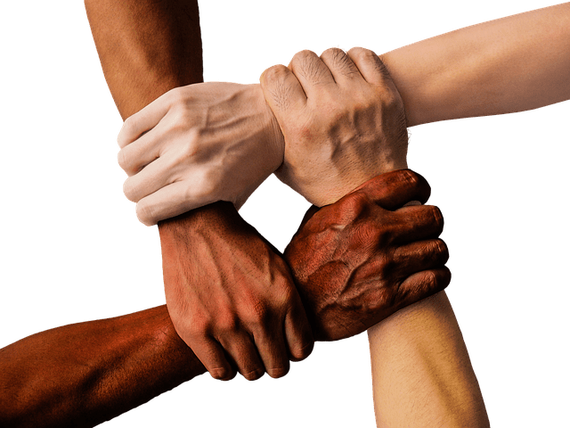
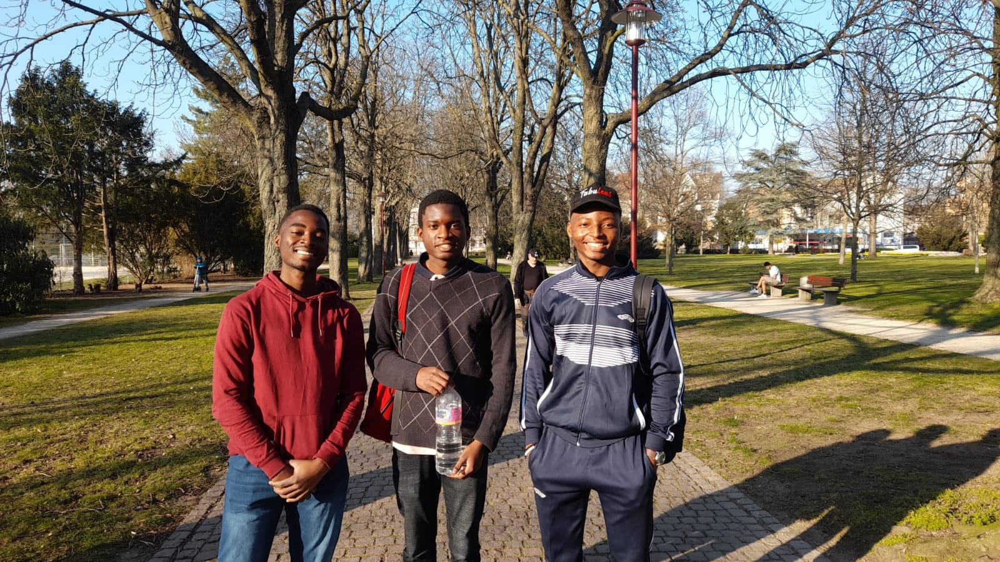

Wer sind wir ?
"The Way" ist ein Verein von Schülern, Studenten und Lehrern, gegründet 2022 von Pr.Dr. Ampharos.
Werden Sie mit "The Way" zu dem, der Sie sein möchten.
Wählen Sie Ihren eigenen Karriereweg und erwerben Sie online ein Diplom mit praktischen Projekten und wöchentlichen persönlichen Mentoring-Sitzungen mit einem engagierten Fachmann auf Ihrem Gebiet.
Was ist unser Ziel ?

Unser Ziel ist es, Schülern zu helfen, ihre Schwierigkeiten in Fächern wie Mathematik und Physik zu überwinden. Dafür geben wir Ihnen einige Tipps und Erklärungen zu den häufigsten Themen und dazu noch Übungen, um ihr Wissen zu testen.
Team und Kursangebote
Momentan haben wir schon mehr als 8 Tutoren im Team für Online-Kurse und fast 120 Abonnierte. Online-Kurse finden auf Basis einer Vereinbarung statt und sind kostenpflichtig. Mit diesem Link können Sie einen Termin für das gewünschte Thema buchen. Die Online-Nachhilfe-Räume (10 Lehrnende maximum) sind sehr praktisch und haben sich im Laufe der Zeit als sehr effizient erwiesen.